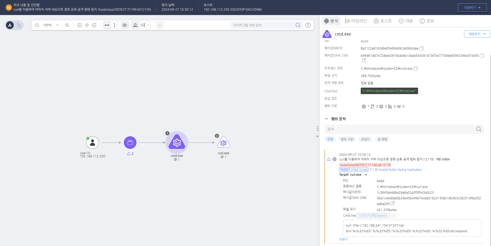

T1190.000.03 Exploit Public-Facing Application - CVE-2021-41773
D3FEND
MITRE ATT&CK 액션을 기준으로 대응 방안을 작성
Detection
모니터링을 통해 경로 순회를 목적으로 하는 문자열인 "/.%%32%65"가 반복되는 네트워크 패킷이 있는지 확인합니다.
Detection(EDR)

https://172.18.10.125:8903/#/analysis/alert/66f60c4b002dc79600000001
Response
해당 행위를 수행한 프로세스를 종료합니다.
Mitigations
보안 패치 및 업데이트 적용 (M1051 - Update Software & M1040 - Behavior Prevention on Endpoint)
- 운영 체제 및 애플리케이션 최신 패치 적용 (특히 CVE로 공개된 취약점 우선 해결)
- 웹 프레임워크, 데이터베이스, API, CMS(WordPress 등) 최신 버전 유지
- 자동 업데이트 기능 활성화 또는 정기적인 패치 검토 실시
웹 애플리케이션 방화벽(WAF) 활용 (M1037 - Network Intrusion Prevention & M1048 - Application Isolation and Sandboxing)
- OWASP Top 10 취약점 방어를 위한 WAF(Web Application Firewall) 적용
- 비인가된 SQL Injection, XSS, CSRF, RCE 공격 탐지 및 차단
- 클라우드 환경에서는 AWS WAF, Azure WAF, Cloudflare WAF 등 활용 가능
취약점 스캐닝 및 침투 테스트 실시 (M1018 - User Account Management & M1050 - Exploit Protection)
- 정기적인 웹 애플리케이션 보안 테스트 수행 (OWASP ZAP, Burp Suite 등 도구 활용)
- 외부 및 내부 네트워크에서 침투 테스트 수행하여 취약점 사전 제거
- 보안 컨설팅 및 모의 해킹 수행을 통해 실전 대응력 강화
최소 권한 원칙 적용 (M1026 - Privileged Account Management & M1028 - Operating System Configuration)
- 웹 서비스 계정에 최소 권한 부여 (예: 데이터베이스 계정이 불필요한 권한을 가지지 않도록 설정)
- 운영 환경과 개발 환경 분리하여 공격자가 테스트 서버를 통해 본 서버로 이동하지 못하도록 차단
- 관리자 페이지 접근 제한 (IP 화이트리스트 설정, VPN 접속 요구 등)
로그 모니터링 및 이상 탐지 (M1047 - System Logging & Monitoring)
- 로그 분석 및 SIEM 솔루션을 활용하여 이상 트래픽 탐지
- 웹 서버 로그(Apache, Nginx, IIS) 및 API 요청 모니터링
- 비정상적인 인증 시도 및 예상치 못한 입력값 탐지
입력값 검증 및 보안 코딩 적용 (M1042 - Disable or Remove Feature or Program & M1035 - Limit Access to Resource Over Network)
- 모든 사용자 입력값을 철저히 검증하여 SQL Injection, XSS, RCE 방지
- OWASP Secure Coding Practices 준수하여 애플리케이션 개발
- 사용하지 않는 기능, API, 포트 비활성화하여 공격 표면 최소화
사용자 인증 강화 (M1032 - Multi-Factor Authentication & M1022 - Restriction of Use of Certain Functions)
- MFA(다중 인증) 적용하여 공격자의 불법 로그인 차단
- CAPTCHA 및 비정상 로그인 시도 차단 (예: Brute Force 공격 방지)
- API 및 관리자 계정에 강력한 암호 정책 적용
Affected Techniques
Action 실행시 함께 영향을 받는 다른 Techniqes
| D3FEND |
| D3-SU Software Update |
| D3-SCP System Configuration Permissions |
| D3-PH Platform Hardening |